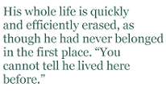

It seems that as an integral part of our human condition, we seek to belong, to find affinity with people, places or cultures — perhaps a combination of all three. Belonging makes us a member of a group or community, with which we can identify, and which leads (somewhat paradoxically) to a sense of our own individual identity. Belonging gives us form and substance, and without it, we are, as Ray Pospisil’s poem “Ghost in the House” reminds us, just ghosts, “without a shape”.
Endeavouring to find a new shape to fit her new situation is the wheelchair-bound persona of Amanda Leskovac’s “Props”. In this short story, the speaker invites us to sympathise with her particular predicament: an attractive and vibrant woman now relegated by a car accident to the asexual world of the disabled. Before, she “was recognised as a woman” but now she is “a person in a wheelchair first”. Her sense of belonging is compromised not by her own perceptions, but by the perceptions of others. Her wheelchair and the stereotypical ideas about disability prevent her from belonging as she once did, leaving her feeling isolated, alone and humiliated.
In Aditi Machado’s poem, “As soon as a man dies”, belonging is associated with possession. Here the former owner of the hut is only recently deceased, and yet already the impersonal “they” have “beaten his hut out of its dust” and assumed their own sovereignty by laying their own “tablecloth” and “cutlery”. He is left a ghost, no longer belonging physically, or even in anyone’s memory. His whole life is quickly and efficiently erased, as though he had never belonged in the first place: “You cannot tell he lived here before.”
Such assumptions about identity are also apparent in Rose Poto’s “The Petition”, set around 1909 in America, and which again represents the notion of belonging through the trope of home ownership and the complexities of ethnic identity. But this time, however, the owner is not deceased, and is quite prepared to use any method available to her to keep her home. Her reply to the vigilantes of “Leave us alone, or I sell the house to nigger!” also reminds us that notions of belonging are contextual and do reflect certain times and cultures. The poem also presents the perspective of belonging as being one of choice. In this case, the mother chose to “take care of [her] own” because there are winners and losers in life: “Life’s a cup; each sip you take is someone else’s loss.”
While belonging may provide us with a form or shape, these texts demonstrate that gaining such identity and sense of belonging may be hard-won. However as the woman in “Props” comes to realise, belonging is about finding yourself: “I firmly believe that a new category within the definition of beauty can be formed. With this one, wheels turning to cross a room take on a level of sexiness that a pair of hips can’t begin to challenge.”
Interestingly, most of the texts in this selection address the theme of belonging from the perspective of its binary opposite, alienation; they resonate with the anxieties attending the need to belong, and rather than being about belonging they are about the absence of that feeling. Perhaps the perspective of the outsider is necessary to provide the artistic distancing required for creating such effective writing.